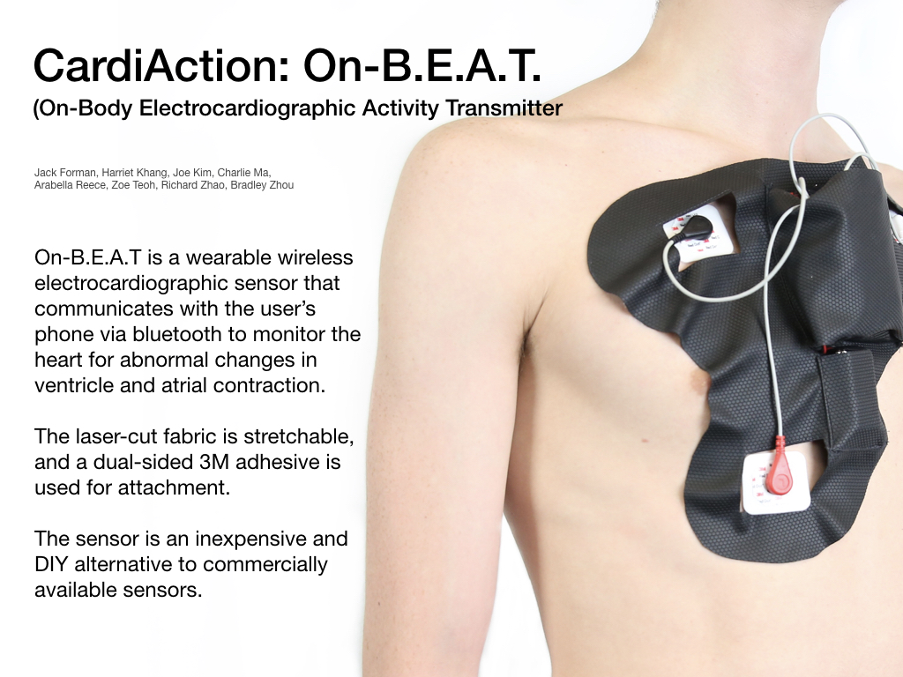

Skills
Natural Language Processing
Computer Vision
Web Application Development
Timeline
3 month
Team
Jack Forman, Harriet Khang, Joseph Kim, Charlie Ma, Arabella Reece, Zoe Teoh, Richard Zhao, Bradley Zhou
Overview
Cardiaction consists of three smaller components: a heart sensor and application, a crowd detection application and a language processing application.
The team hoped to improve the problem that arise in the field of Emergency Response by working with Dr Lenny Weis, an emergency medicine physician with UPMC to analyse the problems faced by emergency responders and identifying possible solutions.

Sensor Poster
Project Opportunity
Emergency Medical Response seeks to solve a very difficult problem in a short timeframe.
⅔ of cardiac arrest incidents which occur are not witnessed or happen in a private location
How can we get that information to EMS if there are no nearby bystanders to call 911?
Cardiac Arrest is a very time-sensitive issue and it is imperative that EMS is able to respond as fast as possible
What can we do to minimize the waiting time from when the 911 call goes out?
For emergencies which happen in public spaces, often confusion and the bystander effect lead to delayed response times
Can we design a computer vision system which is able to recognize disturbances in a crowd and notify an authority?
This can be extended not only to cardiac arrest but also to mass terror incidents and natural disasters
Half of all mass shootings end in 2 minutes or less - can CV help warn us before then?
Simplify Task Management Process
Keep Track of Document History
Simplify Production Cycle Analysis Process
Facilitate Employee and Client Communication
Reach Financial Self Sustainability
Solution
Analyze Vitals in Real Time
Analyze 911 calls in Real Time
Crowd Analysis
Analysing Vitals using Sensors
Used various sensors and custom EKG to give real time analysis on vitals for at-risk patients to detect cardiac arrest
Designed a wearable to sticker to store the sensor and bluetooth device
Sensors send heart rate information to app where the data can be tracked and monitored
GAOHOU AD8232 ECG Heart Monitoring Measurement Sensor Module Pulse Signal Board Set
Connected sensors to Arduino 3 board using HC-05 Bluetooth Module
Visualise health data, which includes heart rate, sleep, activity, nutrition, water intake
Connect users to crucial resources : CPR, AED information and PulsePoint
Connect to sensors to detect potential health emergency
Contact emergency responders during time of emergency and sends critical information to PulsePoint application
Analyzing 911 Calls using Natural Language Processing
Use NLP to analyze 911 calls in real time to keep track of key information, identify emergency at hand, and deliver potentially missing information such as location, condition and medical emergencies
Crowd Analysis using Computer Vision
Crowd analysis uses OpenCV for initial image processing
Designed a wearable to sticker to store the sensor and bluetooth device
Uses Haar-Cascade for full body detection (single-thread). Accurate for objects that it was trained to detect Not good for general “human” detection. (performs poorly on side-profiles or facial detection because it was not trained to do so)
Supports usage of HOG (histogram of oriented gradients) with SVM for a hybrid model if multithreading is desired.
Connected sensors to Arduino 3 board using HC-05 Bluetooth Module
Defaults to single-thread with one model running, since surveillance computers are likely to be stressed running just one model.
Audio processing records general noise levels to create a baseline reference.Flags audio chunks that go above a certain threshold Gives separate warning for extremely loud noises
Direction Detection Algorithms - Correlation Filter (MOSSE filter) tracks individuals and records their individual movement as well as the patterns of the rest of the crowd. Can be combined with anomaly detection algorithms for more robust crowd analysis.
Future Plans
Analysis of Vitals
Link application with the sensors real time, along with working with making API calls to PulsePoint during emergencies
Refine the wearable to make it more compact and fit multiple fashion styles
Add accelerometer data to determine if user is moving
Add a location/map feature to help EMS find the victim
Make a noise alert when a victim calls 911
Analysis of Calls
Use 911 calls in order to train a machine learning model to make recommendations
Crowd Analysis
Improve parallelism to run multiple models concurrently to improve accuracy of human recognition.
Add additional heuristics as to what could be considered “abnormal behavior” in a crowd.
Introduce audio classification instead of just noise level analysis. Take predetermined chunks of audio and classify the source of the audio.
Improve parallelism to run multiple models concurrently to improve accuracy of human recognition.
Add additional heuristics as to what could be considered “abnormal behavior” in a crowd.
Introduce audio classification instead of just noise level analysis. Take predetermined chunks of audio and classify the source of the audio.